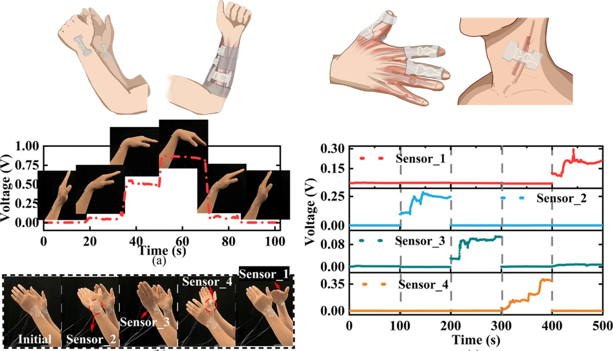

Stretchable Fiber-Optic Sensor for Large-Strain Sensing
Jan. 2023 – Jun. 2024

Stretchable fiber-optic sensor
Overview
This project focused on the development of a flexible and stretchable fiber-optic sensor for large-strain sensing.
Sensor Development
The flexible fiber-optic sensor was developed and characterized for large-strain detection, including measurements of its strain response and repeatability.
Human–Machine Interaction
The sensor was also explored for human–machine interaction, using its deformation-sensitive output to capture user movements.
My Contributions
I participated in the design and fabrication of the stretchable fiber-optic sensor and carried out experimental testing to characterize its sensing performance under deformation.